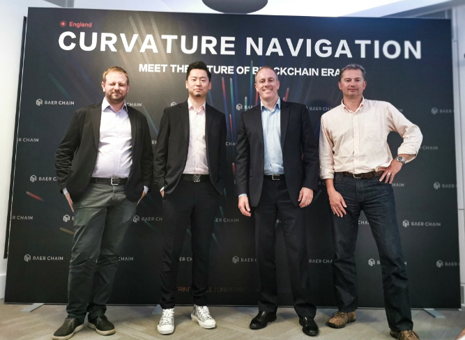
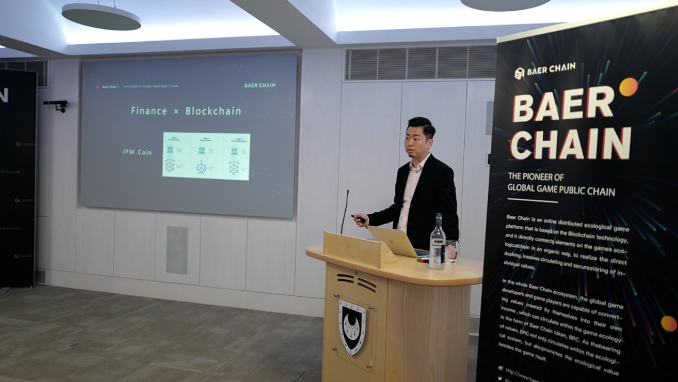
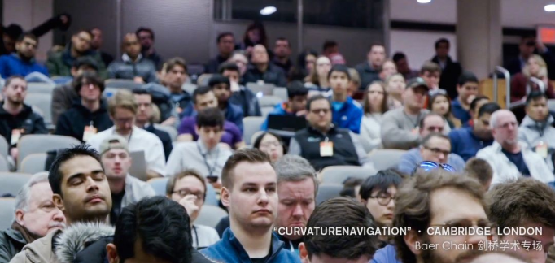

1
6月25日，Baer Chain“曲率航行”登陆英国，在剑桥大学继续进行全球影响力扩张之旅。

Baer Chain CEO-Vincent带队亲赴英国剑桥，在剑桥大学参加了关于区块链行业发展的学术交流会并进行主题演讲，与伦敦经济学院区块链研究学会的首席研究员Dr.Garrick Hileman等区块链研究专家，一同讨论区块链行业的应用发展与落地趋势。

2
交流会上，Vincent发表了以“区块链+应用落地”为主题的学术演讲，讲述了区块链技术在实际生活中的应用落地，以及Baer Chain的项目进展和技术优势。

作为第四次工业革命的重要成果，区块链被称为能够重塑全球经济结构的新一轮科技革命。而处于行业爆发的前夜，我们更应去思考区块链真正的变革到底是什么。只是一味强调颠覆革命，还是更应该将区块链技术与传统行业顺势结合，从而发挥更大的技术优势？
对此，Vincent通过经典案例分析了当前区块链技术在医药、游戏、金融等领域的应用，并表示对区块链技术的落地充满期待，“随着技术的更新迭代，区块链将会在更多的领域实现应用落地，而这些都会给人们的生活带来翻天覆地的变化！”

此外，Vincent还发表了对“区块链+游戏”发展方向的看法，“当前的游戏业在过于追求资产属性的同时，往往会忽视娱乐属性的本身。在这种难以两全的情况下，怎么去找到一个资产与娱乐属性之间的平衡点，是Baer Chain一直在思考并不断为之探索的问题。”
3
今年加密货币迎来了又一波牛市，加密货币带来的短期财富效应虽然巨大，但从长远发展来看，大众所高度关注的加密货币只不过是区块链技术发展过程中的浪花。
越在这个资本市场狂热的时候，作为区块链游戏行业开拓者的我们越应该理性，我们要把对行业的关注点回归到区块链技术的根本，去聆听学术界的声音，去真正理解技术的发展趋势才更为重要。

Vincent坦言，欧洲一直以来是Baer Chain全球化布局最重要的市场之一，我们把“曲率航行”向欧洲持续扩张的重要机会选在剑桥大学，是因为看中了剑桥大学的浓厚学术研究氛围，希望与研究专家一起进行潜心的学术交流，去探索区块链技术发展的更多无限可能。

会上，伦敦经济学院区块链研究学会的首席研究员、Fintech研究专家Dr.Garrick Hileman，发表了主题为“曲率航行·遇见区块链时代的未来”的精彩演讲，与在场的学术专家一起，畅谈分享了关于区块链技术和数字资产的过去、现在以及未来。
Garrick最后表示，与Baer Chain进行的这次关于区块链技术的学术交流十分愉快，并表达了对Baer Chain项目的看好。在英国之后，Baer Chain“曲率航行”将步履不停，继续登陆北美，进行区块链的全球探索之旅。